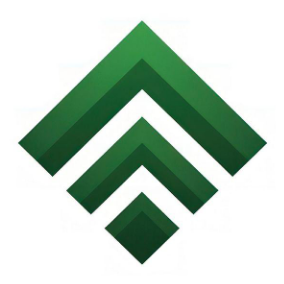
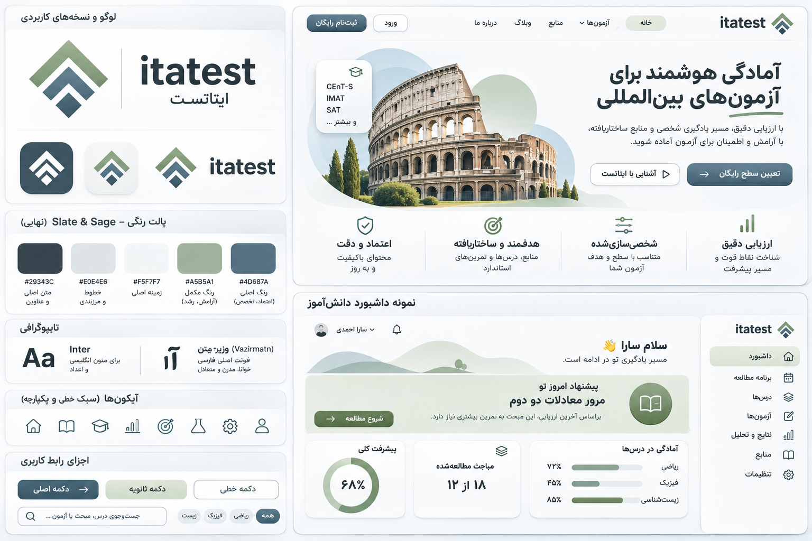

Original silhouette

Both previously missing files are now available and reviewed. Original raster controls geometry; recolored reference and board control identity. Flat colors follow approved hex values. Final owner approval is pending.
Original raster crop / previous SVG / refined SVG. Original shading is retained only in the reference crop; production assets remain flat. Matched widths make the band thickness and diamond placement easier to compare.

Original green/shaded raster. Geometry source only.
Approved sage/slate/charcoal identity; prior SVG followed these proportions.
Preserved Phase 1 proposal before original-reference review.
Original silhouette fitted with symmetric 45° flat paths.
Same geometry; existing accessible dark-theme color mapping.
Same geometry, charcoal flat fill.
Same geometry, off-white flat fill.
Existing title case and live text retained.
No wordmark typography or placement redesign.
Viewed at 100% image scale. Browser antialiasing remains visible at 16px; no alternate simplified logo geometry introduced.
| Measure | Previous SVG | Refined SVG |
|---|---|---|
| Total silhouette height | 256.6px | 245px |
| Upper chevron centerline thickness | 55.6px | 68px |
| Middle chevron centerline thickness | 55.9px | 48px |
| Top to diamond apex | 181.6px | 171px |
Raster threshold bounds: about 248 × 243px. New vector silhouette: 248 × 245px. Small differences reflect antialiasing, shading and a symmetric fit, rather than recovery of an exact vector master. Both original and refined mark retain two chevrons and one diamond. All variants use identical paths.

Board confirms symbol family, sage/slate neutrals and light/inverted usage. Its gradients, shading, lowercase wordmark and conceptual page features are not copied into this scoped geometry refinement.